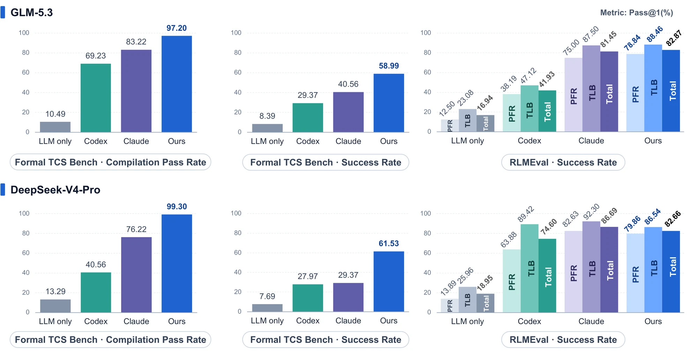

Turing AgentFaithful Automated Formal Verification in Theoretical Computer Science
Shanghai Artificial Intelligence Laboratory
A unified agent harness that turns AI-generated mathematical arguments into machine-checked Lean developments. It goes beyond isolated theorem proving to orchestrate research-level verification end to end — from faithful statements to complete, kernel-checked proofs.
Benchmarks
Results at a glance
61.53%
Faithful theorem-formalization success on Formal TCS Bench (143 problems)
DeepSeek-V4-Pro
+32.16pp
Over Claude Code, the strongest baseline, on the same benchmark and model
58.99% vs 40.56% with GLM-5.3 (+18.43 pp)
99.30%
Of generated Lean statements compile on Formal TCS Bench
DeepSeek-V4-Pro · 97.20% with GLM-5.3
82.87%
Overall pass@1 on the RLMEval TCS subset (248 theorems)
GLM-5.3 · best of all methods

Citation
If you use Turing Agent or the results on this page, please cite:
@techreport{turingagent2026,
title = {Turing Agent: Faithful Automated Formal Verification
in Theoretical Computer Science},
author = {{Turing Agent Team}},
institution = {Shanghai Artificial Intelligence Laboratory},
year = {2026}
}